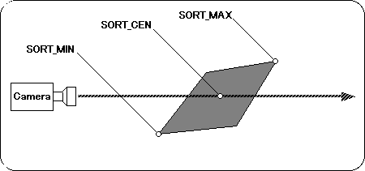
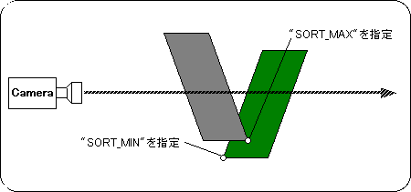
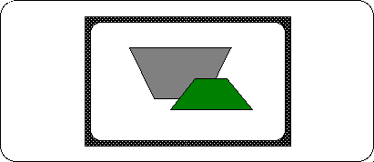
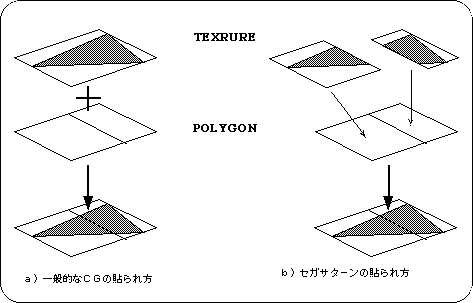
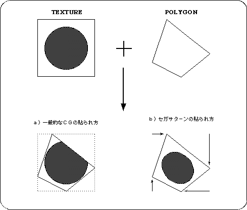
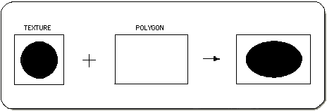
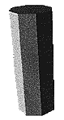
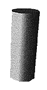

★SGL User's Manual
★PROGRAMMER'S TUTORIAL
★SGL User's Manual
★PROGRAMMER'S TUTORIAL
本章ではセガサターンにおけるポリゴンの面属性について解説します。
ポリゴンには、各々のポリゴンの表示順を決定するための基準位置を表す「Sort」、
ポリゴンの片面を表示するか両面表示をするかを指定する「表裏属性」、ポリゴンに２次元の絵
（ビットマップ・データ）を張り付ける「テクスチャ」といった要素があります。
これらをまとめて「ポリゴンの面属性」と呼びます。
ポリゴンの面属性を指定することで、これまで単なる絵だったポリゴンに様々な表現を加えるこ
とができます。
●アトリビュートデータATTR attribute_label[]={ ATTRIBUTE(Plane,Sort,Texture,Color,Gouraund,Mode,Dir,Option), ................... };
注）ATTRIBUTEマクロは“sl_def.h”で定義されています。
Plane ：片面ポリゴンか両面ポリゴンかを示します（表裏属性） Sort ：ポリゴンの位置関係の代表点を示します（Ｚソート） Texture：テクスチャ名（No.）を示します Color ：カラーデータを示します Gouraud：グーローシェーディングテーブルのアドレスを示します Mode ：ポリゴンの描画モードを示します（各種モード設定） Dir ：ポリゴンやテクスチャの状態を示します Option ：その他の機能を示します（オプション設定）
| マ ク ロ | 内 容 |
|---|---|
| Single_Plane | ポリゴンの片面表示 |
| Dual_Plane | ポリゴンの両面表示 |
/*----------------------------------------------------------------------*/
/* Rotation of Single Plane Polygon */
/*----------------------------------------------------------------------*/
#include "sgl.h"
extern PDATA PD_PLANE;
void ss_main(void)
{
static ANGLE ang[XYZ];
static FIXED pos[XYZ];
slInitSystem(TV_320x224,NULL,1);
slPrint("Sample program 7.2" , slLocate(6,2));
ang[X] = ang[Y] = ang[Z] = DEGtoANG(0.0);
pos[X] = toFIXED( 0.0);
pos[Y] = toFIXED( 0.0);
pos[Z] = toFIXED(170.0);
while(-1){
slPushMatrix();
{
slTranslate(pos[X] , pos[Y] , pos[Z]);
slRotX(ang[X]);
slRotY(ang[Y]);
slRotZ(ang[Z]);
ang[Y] += DEGtoANG(2.0);
slPutPolygon(&PD_PLANE);
}
slPopMatrix();
slSynch();
}
}
#include "sgl.h"
POINT point_PLANE[] = {
POStoFIXED(-20.0, -20.0, 0.0),
POStoFIXED( 20.0, -20.0, 0.0),
POStoFIXED( 20.0, 20.0, 0.0),
POStoFIXED(-20.0, 20.0, 0.0),
};
POLYGON polygon_PLANE[] = {
NORMAL(0.0,0.0,1.0), VERTICES(0,1,2,3),
};
ATTR attribute_PLANE[] = {
ATTRIBUTE(Single_Plane,SORT_CEN,No_Texture,C_RGB(31,31,0),No_Gouraud,MESHoff,sprPolygon,No_Option),
};
PDATA PD_PLANE = {
point_PLANE , sizeof(point_PLANE)/sizeof(POINT) ,
polygon_PLANE , sizeof(polygon_PLANE)/sizeof(POLYGON) ,
attribute_PLANE
};
| マ ク ロ | 内 容 |
|---|---|
| SORT_MIN | カメラに一番近いポリゴン上の頂点を代表点とする |
| SORT_CEN | ポリゴンの中心点を代表点とする |
| SORT_MAX | カメラから一番遠い点を代表点とする |
| SORT_BFR | 直前に登録したポリゴンの手前に表示される |
＜図7-1 Ｚソートの代表点＞

“SORT_BFR”は特殊な指定であり、あるポリゴンを別のポリゴンの上（手前） に表示したい時に使用します。具体的には、“SORT_BFR”を指定したポリゴン の表示位置は、そのポリゴンの直前に登録されているポリゴンのすぐ手前になります。 ただし、２枚のポリゴンをグループ化して使いたいとき等に初めて意味を持つ指定なので、 通常はあまり使用することはないでしょう。
Ｚソート方式はその性質上、代表点の取り方次第で前後関係がおかしくなる可能性を含んでいます。 次の例を見てください。
＜図7-2 代表点による前後関係の相違＞

上図のような代表点の指定をした場合は、実際の画面は下図のようになります。
＜図7-3 実際の画面＞

| テクスチャマッピング | |||
| セガサターンの場合 | 一般ＣＧの場合 | ||
テクスチャの | 張り込み | 1枚のポリゴンに対して1枚のテクスチャの張り込みが可能です。 | 複数のポリゴンに渡って1枚のテクスチャを張り込みできます。 |
変形 | ポリゴンの形状に応じてテクスチャをも変形します。 | ポリゴンの形にテクスチャがクリッピングされます。 | |
＜図7-5 テクスチャの特徴 １＞

一般的なＣＧにおけるテクスチャは、複数のポリゴンに渡って張り込むことができますが、セガサターンの場合は一枚のテクスチャを一枚のポリゴンに対応させて張り込むことになります。２枚以上のポリゴンに渡ったテクスチャを貼る場合は、図 7-5 のようにそれぞれのポリゴンに合わせてテクスチャを分割する必要があります。
＜図7-6 テクスチャの特徴２＞

＜図7-7 テクスチャの歪み＞

それでは、サンプルプログラム（リスト 7-4）を見てみましょう。
テクスチャが貼られた１枚のポリゴンが、Ｙ軸を支点に回転します。
ここではあらかじめ２枚のテクスチャを登録しておきます。
一枚は［SONIC］の絵（size：64×64pixel）で、もう一枚は「ＡＭ２」マーク（size：64×32pixel）です。
/*----------------------------------------------------------------------*/
/* Polygon & Texture */
/*----------------------------------------------------------------------*/
#include "sgl.h"
extern PDATA PD_PLANE;
extern TEXTURE tex_sample[];
extern PICTURE pic_sample[];
#define max_texture 2
void set_texture(PICTURE *pcptr , Uint32 NbPicture)
{
TEXTURE *txptr;
for(; NbPicture--> 0; pcptr++){
txptr = tex_sample + pcptr->texno;
slDMACopy((void *)pcptr->pcsrc,
(void *)(SpriteVRAM + ((txptr->CGadr) << 3)),
(Uint32)((txptr->Hsize * txptr->Vsize * 4) >> (pcptr->cmode)));
}
}
void ss_main(void)
{
static ANGLE ang[XYZ];
static FIXED pos[XYZ];
slInitSystem(TV_320x224,tex_sample,1);
set_texture(pic_sample,max_texture);
slPrint("Sample program 7.4" , slLocate(9,2));
ang[X] = ang[Y] = ang[Z] = DEGtoANG(0.0);
pos[X] = toFIXED( 0.0);
pos[Y] = toFIXED( 0.0);
pos[Z] = toFIXED(170.0);
while(-1){
slPushMatrix();
{
slTranslate(pos[X] , pos[Y] , pos[Z]);
slRotX(ang[X]);
slRotY(ang[Y]);
slRotZ(ang[Z]);
ang[Y] += DEGtoANG(2.0);
slPutPolygon(&PD_PLANE);
}
slPopMatrix();
slSynch();
}
}
まず29行目に注目してください。
今まで暗黙のうちに使用していたイニシャライズルーチンですが、
第二パラメータがこれまでと違っています。ここにはＳＧＬに渡すテクスチャテーブル
へのポインタを指定します。
（実際のテーブルは“texture.c”で定義。リスト 7-5 参照。）
これまではテクスチャを使用していなかったので、“NULL”を代入していたというわけです。
30行目ではテクスチャデータをV-RAMに転送しています。
このテクスチャデータ転送はイニシャライズ後いつでも実行できるので、
ゲーム中にテクスチャを描き替えるといったテクニックも容易に行うことができます。
12行目以降は実際のテクスチャデータ転送ルーチンになります。
ここではテクスチャテーブルの先頭アドレスとテクスチャ登録数を受け取っています。
そして18行目の“slDMACopy”関数で、ＤＭＡを使ってデータを高速転送しています。
この関数の第一パラメータは転送元アドレス、第二パラメータが転送先アドレス、
第三パラメータが転送サイズとなっています。
次にテクスチャデータを見てみましょう。
#include "sgl.h"
/********************************/
/* Texture Data */
/********************************/
TEXDAT sonic_64x64[]={ /* テクスチャテ−タ１ */
0xffff, 0xffff, 0xffff, 0xffff, 0xffff, 0xffff, 0xffff, 0xffff,
:
:
中略
:
};
TEXDAT am2_64x32[]={ /* テクスチャテ−タ２ */
0xffff, 0xffff, 0xffff, 0xffff, 0xffff, 0xffff, 0xffff, 0xffff,
:
:
中略
:
};
TEXTURE tex_sample[]={ /* SGLに渡すテーブル */
TEXDEF(64,64,0),
TEXDEF(64,32,64*64*1),
};
PICTURE pic_sample[]={ /* VRAM転送用テーブル */
PICDEF(0,COL_32K,sonic_64x64),
PICDEF(1,COL_32K,am2_64x32),
};
TEXTUREマクロで記述された部分がＳＧＬに渡すテクスチャテーブルです。
それぞれのテクスチャのサイズ（横×縦）と、実際のテクスチャデータの先頭
アドレスからのオフセット値をセットします。
最後に、PICTUREマクロ部分がVRAM転送用のテーブルになります。
テクスチャナンバー、カラーモード、テクスチャデータへのポインタ
をそれぞれセットします。
それでは最後になりましたが、ポリゴンデータのアトリビュートを見てみましょう。
#include "sgl.h"
#define PN_SONIC 0
#define PN_AM2 1
POINT point_plane[] = {
POStoFIXED(-40.0 , -40.0 , 0.0) ,
POStoFIXED( 40.0 , -40.0 , 0.0) ,
POStoFIXED( 40.0 , 40.0 , 0.0) ,
POStoFIXED(-40.0 , 40.0 , 0.0)
};
POLYGON polygon_plane[] = {
NORMAL(0.0,0.0,1.0), VERTICES(0 , 1 , 2 , 3)
};
ATTR attribute_plane[] = {
ATTRIBUTE(Single_Plane, SORT_CEN, PN_SONIC, No_Palet, No_Gouraud, CL32KRGB|MESHoff, sprNoflip, No_Option),
};
PDATA PD_PLANE = {
point_plane , sizeof(point_plane)/sizeof(POINT),
polygon_plane, sizeof(polygon_plane)/sizeof(POLYGON),
attribute_plane
};
 |
 | |
|---|---|---|
| フラットシェーディング | グ−ロシェーディング |
/*----------------------------------------------------------------------*/
/* Gouraud Shading */
/*----------------------------------------------------------------------*/
#include "sgl.h"
extern PDATA PD_CUBE;
#define GRoffsetTBL(r,g,b) (((b & 0x1f) <<0) | ((g & 0x1f) << 5) | (r & 0x1f))
#define VRAMaddr (SpriteVRAM+0x70000)
static Uint16 GRdata[6][4] = {
{ GRoffsetTBL( 0,-16,-16) , GRoffsetTBL( 0,-16,-16) ,
GRoffsetTBL( 0,-16,-16) , GRoffsetTBL(-16, 15, 0) } ,
{ GRoffsetTBL( 0,-16,-16) , GRoffsetTBL( 0,-16,-16) ,
GRoffsetTBL(-16, 15, 0) , GRoffsetTBL( 0,-16,-16) } ,
{ GRoffsetTBL(-16, 15, 0) , GRoffsetTBL( 0,-16,-16) ,
GRoffsetTBL( 0,-16,-16) , GRoffsetTBL( 0,-16,-16) } ,
{ GRoffsetTBL( 0,-16,-16) , GRoffsetTBL(-16, 15, 0) ,
GRoffsetTBL( 0,-16,-16) , GRoffsetTBL( 0,-16,-16) } ,
{ GRoffsetTBL( 0,-16,-16) , GRoffsetTBL(-16, 15, 0) ,
GRoffsetTBL( 0,-16,-16) , GRoffsetTBL( 0,-16,-16) } ,
{ GRoffsetTBL(-16, 15, 0) , GRoffsetTBL( 0,-16,-16) ,
GRoffsetTBL( 0,-16,-16) , GRoffsetTBL( 0,-16,-16) }
};
void ss_main(void)
{
static ANGLE ang[XYZ];
static FIXED pos[XYZ];
slInitSystem(TV_320x224,NULL,1);
slPrint("Sample program 7.6" , slLocate(9,2));
ang[X] = DEGtoANG(30.0);
ang[Y] = DEGtoANG( 0.0);
ang[Z] = DEGtoANG( 0.0);
pos[X] = toFIXED( 0.0);
pos[Y] = toFIXED( 0.0);
pos[Z] = toFIXED(200.0);
slDMACopy(GRdata,(void *)VRAMaddr,sizeof(GRdata));
while(-1){
slPushMatrix();
{
slTranslate(pos[X] , pos[Y] , pos[Z]);
slRotX(ang[X]);
slRotY(ang[Y]);
slRotZ(ang[Z]);
slPutPolygon(&PD_CUBE);
}
slPopMatrix();
ang[Y] += DEGtoANG(1.0);
slSynch();
}
}
それでは、次にアトリビュートを見てみましょう。
#include "sgl.h"
#define GRaddr 0xe000
static POINT point_CUBE[] = {
POStoFIXED(-20.0 , -20.0 , 20.0) ,
POStoFIXED( 20.0 , -20.0 , 20.0) ,
POStoFIXED( 20.0 , 20.0 , 20.0) ,
POStoFIXED(-20.0 , 20.0 , 20.0) ,
POStoFIXED(-20.0 , -20.0 , -20.0) ,
POStoFIXED( 20.0 , -20.0 , -20.0) ,
POStoFIXED( 20.0 , 20.0 , -20.0) ,
POStoFIXED(-20.0 , 20.0 , -20.0)
};
static POLYGON polygon_CUBE[] = {
NORMAL( 0.0 , 0.0 , 1.0), VERTICES(0 , 1 , 2 , 3),
NORMAL(-1.0 , 0.0 , 0.0), VERTICES(4 , 0 , 3 , 7),
NORMAL( 0.0 , 0.0 ,-1.0), VERTICES(5 , 4 , 7 , 6),
NORMAL( 1.0 , 0.0 , 0.0), VERTICES(1 , 5 , 6 , 2),
NORMAL( 0.0 ,-1.0 , 0.0), VERTICES(4 , 5 , 1 , 0),
NORMAL( 0.0 , 1.0 , 0.0), VERTICES(3 , 2 , 6 , 7)
};
static ATTR attribute_CUBE[] = {
ATTRIBUTE(Single_Plane, SORT_MIN, No_Texture, C_RGB(31,16,31), GRaddr, MESHoff|CL_Gouraud, sprPolygon,No_Option),
ATTRIBUTE(Single_Plane, SORT_MIN, No_Texture, C_RGB(31,16,31), GRaddr+1, MESHoff|CL_Gouraud, sprPolygon,No_Option),
ATTRIBUTE(Single_Plane, SORT_MIN, No_Texture, C_RGB(31,16,31), GRaddr+2, MESHoff|CL_Gouraud, sprPolygon,No_Option),
ATTRIBUTE(Single_Plane, SORT_MIN, No_Texture, C_RGB(31,16,31), GRaddr+3, MESHoff|CL_Gouraud, sprPolygon,No_Option),
ATTRIBUTE(Single_Plane, SORT_MIN, No_Texture, C_RGB(31,16,31), GRaddr+4, MESHoff|CL_Gouraud, sprPolygon,No_Option),
ATTRIBUTE(Single_Plane, SORT_MIN, No_Texture, C_RGB(31,16,31), GRaddr+5, MESHoff|CL_Gouraud, sprPolygon,No_Option),
};
PDATA PD_CUBE = {
point_CUBE , sizeof(point_CUBE)/sizeof(POINT),
polygon_CUBE , sizeof(polygon_CUBE)/sizeof(POLYGON) ,
attribute_CUBE
};
第6パラメータ“Mode”にも注目してください。
グーローシェーディングを使う場合、必ずここに“CL_Gouraud”を指定する必要があります。
なお、グーローシェーディングを使わない時は、第5パラメータ、“Gouraud”には
マクロ“No_Gouraud”を指定してください。
| グループ | マクロ | 内容 |
|---|---|---|
| 【1】 | No_Window | Windowの制限を受けない(default) |
| Window_In | Windowの内側に表示する | |
| Window_Out | Windowの外側に表示する | |
| 【2】 | MESHoff | 通常表示(default) |
| MESHon | メッシュで表示する | |
| 【3】 | ECdis | EndCodeを無効にする |
| ECenb | EndCodeを有効にする(default) | |
| 【4】 | SPdis | 透明ピクセルも表示する(default) |
| SPenb | 透明ピクセルは表示しない | |
| 【5】 | CL16Bnk | 16色カラーバンクモード(default) |
| CL16Look | 16色ルックアップテーブル | |
| CL64Bnk | 64色カラーバンクモード | |
| CL128Bnk | 128色カラーバンクモード | |
| CL256Bnk | 256色カラーバンクモード | |
| CL32KRGB | 32768色ＲＧＢモード | |
| 【6】 | CL_Replace | 上書き(標準)モード(default) |
| CL_Shadow | 影モード | |
| CL_Half | 半輝度モード | |
| CL_Trans | 半透明モード | |
| CL_Gouraud | グーローシェーディングモード | |
| 【7】 | HSSon | ハイスピードシュリンクを使用 |
| HSSoff | ハイスピードシュリンクを使わない(default) | |
| 【8】 | MSBon | フレームバッファに書き込むときにMSBを立てる |
| MSBoff | フレームバッファに書き込むときにMSBを立てない(default) |
グループ【５】は、テクスチャのカラーモード指定するためのものなので、 テクスチャを使用しない場合は、必ずデフォルト（“CL_16Bnk”あるいは指定しない） にしてください。ここに他のモードを指定すると、ポリゴンが表示されなくなります。
グループ【６】の例外として、“CL_Gouraud |- CL_Half”と“CL_Gouraud |- CL_Trans”
が使用できます。
半輝度グーローシェーディング、半透明グーローシェーディングを使いたい時に利用してください。
なお、グーローシェーディングを使用する場合は、第5パラメータの設定と併せてここにも“CL_Gouraud”
をセットする必要があります。
半輝度、半透明、グーローシェーディングを使用する場合、ポリゴンではＲＧＢダイレクト、
テクスチャーは32768色ＲＧＢモードのみサポートされます。
その他の設定では正しく表示できませんので注意してください。
| マクロ | 内 容 |
|---|---|
| sprNoflip | テクスチャを通常表示します |
| sprHflip | テクスチャを左右反転します |
| sprVflip | テクスチャを上下反転します |
| sprHVflip | テクスチャを上下左右反転します |
| sprPolygon | ポリゴンを表示します |
| sprPolyLine | ポリラインを表示します |
| sprLine | 初めの２点を使用した直線を表示します |
| マクロ | 内 容 |
|---|---|
| UseLight | 光源計算を行う |
| UsePalette | ポリゴンのカラーがパレット形式であることを示す |
| UseNearClip | ４頂点がslWindowClipLevelで指定した画面外に出たら表示しない |
| UseDepth | 平行光源でのデプスキューの計算を行う |
| UseGouraud | リアルタイムグーローによる光源計算を行う(slPutPolygonXでのみ有効) |
| 関数型 | 関数名 | パラメータ | 機 能 |
|---|---|---|---|
| void | slDMACopy | Src,dst,cnt | CPU DMAを用いたブロック転送 |
★SGL User's Manual
★PROGRAMMER'S TUTORIAL